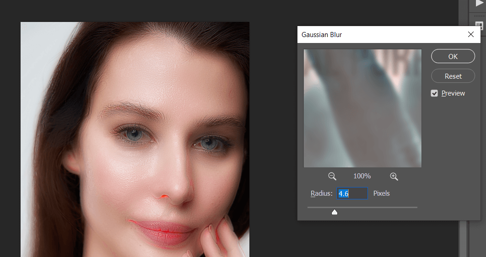

快速皮肤修复 in Photoshop
人像处理中皮肤修复是很重要也很浪费时间的步骤，之前介绍了通过频率分离的方法处理，下面介绍一种快速有效的皮肤修复方法。
PHP频率分离处理皮肤 in Photoshop
Photoshop 皮肤处理进阶
使用到的技术：反转图像、vivid light、high pass 高反差保留、高斯模糊
原图如下：
复制原图图层，转换为 smart object 方便后期调整，快捷键 ctrl I 反转图像：
混合模式改为 vivid light：
选择 filter - other - high pass：
设置合适数值，使面部细节模糊，痘痘消失：
选择 gilter - blur - 高斯模糊，调整数值使得面部细节纹理恢复，但面部瑕疵消失：

此时这个图层就完成了面部瑕疵的修复，但我们只需要这种处理对面部需要的地方生效，所以按住 alt 点击建立图层蒙版，然后用白色笔刷工具刷出需要处理的皮肤部分：
最终效果如下：
标签：无